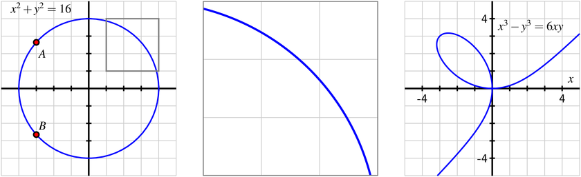

Section2.7Derivatives of Functions Given Implicitly¶ permalink
{In this section, we strive to understand the ideas generated by the following important questions:
What does it mean to say that a curve is an implicit function of \(x\), rather than an explicit function of \(x\)?
How does implicit differentiation enable us to find a formula for \(\frac{dy}{dx}\) when \(y\) is an implicit function of \(x\)?
In the context of an implicit curve, how can we use \(\frac{dy}{dx}\) to answer important questions about the tangent line to the curve?
}
Subsection2.7.1Introduction
In all of our studies with derivatives to date, we have worked in a setting where we can express a formula for the function of interest explicitly in terms of \(x\). But there are many interesting curves that are determined by an equation involving \(x\) and \(y\) for which it is impossible to solve for \(y\) in terms of \(x\).
Figure2.7.1At left, the circle given by \(x^2 + y^2 = 16\). In the middle, the portion of the circle \(x^2 + y^2 = 16\) that has been highlighted in the box at left. And at right, the lemniscate given by \(x^3 - y^3 = 6xy\).
Perhaps the simplest and most natural of all such curves are circles. Because of the circle's symmetry, for each \(x\) value strictly between the endpoints of the horizontal diameter, there are two corresponding \(y\)-values. For instance, in Figure 2.7.1, we have labeled \(A = (-3,\sqrt{7})\) and \(B = (-3,-\sqrt{7})\), and these points demonstrate that the circle fails the vertical line test. Hence, it is impossible to represent the circle through a single function of the form \(y = f(x)\). At the same time, portions of the circle can be represented explicitly as a function of \(x\), such as the highlighted arc that is magnified in the center of Figure 2.7.1. Moreover, it is evident that the circle is locally linear, so we ought to be able to find a tangent line to the curve at every point; thus, it makes sense to wonder if we can compute \(\frac{dy}{dx}\) at any point on the circle, even though we cannot write \(y\) explicitly as a function of \(x\). Finally, we note that the righthand curve in Figure 2.7.1 is called a lemniscate \knownindex{\lt main>lemniscate\lt /main>} and is just one of many fascinating possibilities for implicitly given curves.
In working with implicit functions, we will often be interested in finding an equation for \(\frac{dy}{dx}\) that tells us the slope of the tangent line to the curve at a point \((x,y)\). To do so, it will be necessary for us to work with \(y\) while thinking of \(y\) as a function of \(x\), but without being able to write an explicit formula for \(y\) in terms of \(x\). The following preview activity reminds us of some ways we can compute derivatives of functions in settings where the function's formula is not known. For instance, recall the earlier example \(\frac{d}{dx}[e^{u(x)}] = e^{u(x)}u'(x)\).
Preview Activity
Let \(f\) be a differentiable function of \(x\) (whose formula is not known) and recall that \(\frac{d}{dx}[f(x)]\) and \(f'(x)\) are interchangeable notations. Determine each of the following derivatives of combinations of explicit functions of \(x\), the unknown function \(f\), and an arbitrary constant \(c\).
\(\ds \frac{d}{dx} \left[ x^2 + f(x) \right]\)
\(\ds \frac{d}{dx} \left[ x^2 f(x) \right]\)
\(\ds \frac{d}{dx} \left[ c + x + f(x)^2 \right]\)
Because a circle is perhaps the simplest of all curves that cannot be represented explicitly as a single function of \(x\), we begin our exploration of implicit differentiation with the example of the circle given by \(x^2 + y^2 = 16.\) It is visually apparent that this curve is locally linear, so it makes sense for us to want to find the slope of the tangent line to the curve at any point, and moreover to think that the curve is differentiable. The big question is: how do we find a formula for \(\frac{dy}{dx}\), the slope of the tangent line to the circle at a given point on the circle? By viewing \(y\) as an implicit 1 Essentially the idea of an implicit function is that it can be broken into pieces where each piece can be viewed as an explicit function of \(x\), and the combination of those pieces constitutes the full implicit function. For the circle, we could choose to take the top half as one explicit function of \(x\), and the bottom half as another. \knownindex{\lt main>implicit function\lt /main>} function of \(x\), we essentially think of \(y\) as some function whose formula \(f(x)\) is unknown, but which we can differentiate. Just as \(y\) represents an unknown formula, so too its derivative with respect to \(x\), \(\frac{dy}{dx}\), will be (at least temporarily) unknown.
Consider the equation \(x^2 + y^2 = 16\) and view \(y\) as an unknown differentiable function of \(x\). Differentiating both sides of the equation with respect to \(x\), we have
Next, it is essential that we recognize the different roles being played by \(x\) and \(y\). Since \(x\) is the independent variable, it is the variable with respect to which we are differentiating, and thus \(\frac{d}{dx} \left[x^2\right] = 2x.\) But \(y\) is the dependent variable and \(y\) is an implicit function of \(x\). Thus, when we want to compute \(\frac{d}{dx}[y^2]\) it is identical to the situation in Preview Activity where we computed \(\frac{d}{dx}[f(x)^2]\). In both situations, we have an unknown function being squared, and we seek the derivative of the result. This requires the chain rule, by which we find that \(\frac{d}{dx}[y^2] = 2y^1 \frac{dy}{dx}.\) Therefore, continuing our work in differentiating both sides of \(x^2 + y^2 = 16\), we now have that
\[
2x + 2y \frac{dy}{dx} = 0.
\]
Since our goal is to find an expression for \(\frac{dy}{dx}\), we solve this most recent equation for \(\frac{dy}{dx}\). Subtracting \(2x\) from both sides and dividing by \(2y\),
\[
\frac{dy}{dx} = -\frac{2x}{2y} = -\frac{x}{y}.
\]Figure2.7.2The circle given by \(x^2 + y^2 = 16\) with point \((a,b)\) on the circle and the tangent line at that point, with labeled slopes of the radial line, \(m_r\), and tangent line, \(m_t\).
There are several important things to observe about the result that \(\frac{dy}{dx} = -\frac{x}{y}\). First, this expression for the derivative involves both \(x\) and \(y\). It makes sense that this should be the case, since for each value of \(x\) between \(-4\) and \(4\), there are two corresponding points on the circle, and the slope of the tangent line is different at each of these points. Second, this formula is entirely consistent with our understanding of circles. If we consider the radius from the origin to the point \((a,b)\), the slope of this line segment is \(m_r = \frac{b}{a}\). The tangent line to the circle at \((a,b)\) will be perpendicular to the radius, and thus have slope \(m_t = -\frac{a}{b}\), as shown in Figure 2.7.2. Finally, the slope of the tangent line is zero at \((0,4)\) and \((0,-4)\), and is undefined at \((-4,0)\) and \((4,0)\); all of these values are consistent with the formula \(\frac{dy}{dx} = -\frac{x}{y}\).
We consider the following more complicated example to investigate and demonstrate some additional algebraic issues that arise in problems involving implicit differentiation.
For the three derivatives we now must execute, the first uses the simple power rule, the second requires the chain rule (since \(y\) is an implicit function of \(x\)), and the third necessitates the product rule (again since \(y\) is a function of \(x\)). Applying these rules, we now find that
Remembering that our goal is to find an expression for \(\frac{dy}{dx}\) so that we can determine the slope of a particular tangent line, we want to solve the preceding equation for \(\frac{dy}{dx}\). To do so, we get all of the terms involving \(\frac{dy}{dx}\) on one side of the equation and then factor. Expanding and then subtracting \(3x^2 - 2y\) from both sides, it follows that
Factoring the left side to isolate \(\frac{dy}{dx}\), we have
\[
\frac{dy}{dx}(2y - 2x) = 2y - 3x^2.
\]
Finally, we divide both sides by \((2y - 2x)\) and conclude that
\[
\frac{dy}{dx} = \frac{2y-3x^2}{2y-2x}.
\]
Here again, the expression for \(\frac{dy}{dx}\) depends on both \(x\) and \(y\). To find the slope of the tangent line at \((-1,1)\), we substitute this point in the formula for \(\frac{dy}{dx}\), using the notation
This value matches our visual estimate of the slope of the tangent line shown in Figure 2.7.4.
\hspace{5.0in}
Example 2.7.3 shows that it is possible when differentiating implicitly to have multiple terms involving \(\frac{dy}{dx}\). Regardless of the particular curve involved, our approach will be similar each time. After differentiating, we expand so that each side of the equation is a sum of terms, some of which involve \(\frac{dy}{dx}\). Next, addition and subtraction are used to get all terms involving \(\frac{dy}{dx}\) on one side of the equation, with all remaining terms on the other. Finally, we factor to get a single instance of \(\frac{dy}{dx}\), and then divide to solve for \(\frac{dy}{dx}\).
Note, too, that since \(\frac{dy}{dx}\) is often a function of both \(x\) and \(y\), we use the notation
\[
\left. \frac{dy}{dx} \right|_{(a,b)}
\]
to denote the evaluation of \(\frac{dy}{dx}\) at the point \((a,b)\). This is analogous to writing \(f'(a)\) when \(f'\) depends on a single variable.
Finally, there is a big difference between writing \(\frac{d}{dx}\) and \(\frac{dy}{dx}\). For example,
\[
\frac{d}{dx}[x^2 + y^2]
\]
gives an instruction to take the derivative with respect to \(x\) of the quantity \(x^2 + y^2\), presumably where \(y\) is a function of \(x\). On the other hand,
\[
\frac{dy}{dx}(x^2 + y^2)
\]
means the product of the derivative of \(y\) with respect to \(x\) with the quantity \(x^2 + y^2\). Understanding this notational subtlety is essential.
The following activities present opportunities to explore several different problems involving implicit differentiation.
Does the graph pass the vertical line test? Can you solve the degree 5 equation \(x = y^5 - 5y^3 + 4y\) for \(y\)?
Note, for instance, that \(\frac{d}{dx}[y^5] = 5y^4\). After differentiating, factor to get a single instance of \(\frac{dy}{dx}\) on one side of the equation.
Remember the meaning of \(\left. \frac{dy}{dx} \right|_{(0,1)}\) and that point-slope form of a line is \(y - y_0 = m(x-x_0)\).
A line is vertical if and only if its slope is undefined. What point(s) make \(\frac{dy}{dx}\) undefined?
Because the graph of the curve fails the vertical line test, \(y\) cannot be a function of \(x\). This also confirms our intuition that there is not an algebraic means by which we can rearrange the equation \(x = y^5 - 5y^3 + 4y\) to write \(y\) in terms of \(x\).
We differentiate implicitly, taking the derivative of each side with respect to \(x\),
\[
\frac{d}{dx}[x ]= \frac{d}{dx}[y^5 - 5y^3 + 4y],
\]
and evaluate the elementary derivative on the left and use the sum rule on the right to find that
\[
1 = \frac{d}{dx}[y^5] - \frac{d}{dx}[5y^3] + \frac{d}{dx}[4y].
\]
By the chain and constant multiple rules, viewing \(y\) as a function of \(x\), we now have
\[
1 = 5y^4\frac{dy}{dx} - 15y^2\frac{dy}{dx} + 4\frac{dy}{dx}.
\]
Factoring,
\[
1 = \frac{dy}{dx}(5y^4 - 15y^2 + 4),
\]
and therefore
\[
\frac{dy}{dx} = \frac{1}{5y^4 - 15y^2 + 4}.
\]
To find an equation of the line tangent to the graph of \(x = y^5 - 5y^3 + 4y\) at the point \((0, 1)\), we only need the slope of the tangent line. Hence we compute
\[
\left. \frac{dy}{dx} \right|_{(0,1)} = \frac{1}{5 \cdot 1^4 - 15 \cdot 1^2 + 4} = -\frac{1}{6}.
\]
Therefore, the equation of the tangent line is
\[
y - 1 = -\frac{1}{6}(x-0)
\]
or \(y = -\frac{1}{6}x + 1\).
Since a line is vertical whenever its slope is undefined, we seek all points \((x,y)\) that make \(\frac{dy}{dx}\) undefined. This will occur precisely when the denominator, \(5y^4 - 15y^2 + 4\), is zero. Using a graphing utility or computer algebra system to solve the equation \(5y^4 - 15y^2 + 4 = 0\), we find that this happens at the four approximate \(y\)-values \(y \approx \pm 0.543912, \pm 1.64443\). For each such value, we use the original equation \(x = y^5 - 5y^3 + 4y\) to find the \(x\)-value of the point. Doing so, we have established that there are four points at which the tangent line is vertical, and they are approximately \((1.418697,0.543912)\), \((-1.418697,-0.543912)\), \((-3.63143, 1.64443)\), and \((3.63143, -1.64443)\).
Two natural questions to ask about any curve involve where the tangent line can be vertical or horizontal. To be horizontal, the slope of the tangent line must be zero, while to be vertical, the slope must be undefined. It is typically the case when differentiating implicitly that the formula for \(\frac{dy}{dx}\) is expressed as a quotient of functions of \(x\) and \(y\), say
\[
\frac{dy}{dx} = \frac{p(x,y)}{q(x,y)}.
\]
Thus, we observe that the tangent line will be horizontal precisely when the numerator is zero and the denominator is nonzero, making the slope of the tangent line zero. Similarly, the tangent line will be vertical whenever \(q(x,y) = 0\) and \(p(x,y) \ne 0\), making the slope undefined. If both \(x\) and \(y\) are involved in an equation such as \(p(x,y) = 0\), we try to solve for one of them in terms of the other, and then use the resulting condition in the original equation that defines the curve to find an equation in a single variable that we can solve to determine the point(s) that lie on the curve at which the condition holds. It is not always possible to execute the desired algebra due to the possibly complicated combinations of functions that often arise.
Use this fact to answer each of the following questions.
Determine all points \((x,y)\) at which the tangent line to the curve is horizontal. (Use technology appropriately to find the needed zeros of the relevant polynomial function.)
Determine all points \((x,y)\) at which the tangent line is vertical. (Use technology appropriately to find the needed zeros of the relevant polynomial function.)
Find the equation of the tangent line to the curve at one of the points where \(x = 1\).
Note that the numerator of \(\frac{dy}{dx}\) is a quadratic function of \(x\). What are its zeros?
The denominator of \(\frac{dy}{dx}\) is a cubic function of \(y\). Use appropriate technology to determine the zeros of this function.
When \(x = 1\), then \(y\) must satisfy the equation \(y(y^2-1)(y-2) = 0\). Evaluate \(\frac{dy}{dx}\) at one such point and use your result appropriately.
To find where the tangent line to the curve is horizontal, we set \(\frac{dy}{dx} = 0\), which requires that the numerator be zero, or in other words that
\[
(x-1)(x-2) + x(x-2) + x(x-1) = 0.
\]
Expanding and combining like terms, we find that \(3x^2 - 6x + 2 = 0\), which occurs where \(x = \frac{3\pm\sqrt{3}}{3} \approx 0.42265, 1.57735\). From the graph in Figure 2.7.8, we observe that at each such \(x\)-value, there are several corresponding \(y\)-values for which the tangent line will be horizontal. For instance, when \(x = 0.42265\), then \(y\) must satisfy the equation
\[
y(y^2-1)(y-2) = 0.42265(0.42265-1)(0.42265-2) = 0.384900.
\]
Because this is a quartic equation (degree 4) equation in \(y\), we use computational technology to help us find the solutions. Doing so, we find four approximate values for \(y\), \(y \approx -1.05782, 0.229478, 0.770522, 2.05782\), and thus our estimates for four points at which the tangent line is horizontal are
\[
(0.42265, -1.05782); (0.42265, 0.229478); (0.42265, 0.770522); (0.42265, 2.05782).
\]
Similar work can be done to find the four points at which the tangent line is horizontal when \(x \approx 1.57735\).
The tangent line to the curve is vertical wherever \(\frac{dy}{dx}\) is undefined, which occurs precisely where
\[
(y^2-1)(y-2) + 2y^2(y-2) + y(y^2-1) = 0.
\]
Expanding and combining like terms, we see that we need to solve the cubic equation \(4y^3 - 6y^2 - 2y + 2 = 0\); using a computer algebra system, we find that this occurs when \(y = \frac{1}{2}, \frac{1 \pm \sqrt{5}}{2}.\) It now remains to find the \(x\)-coordinate that corresponds to each such \(y\)-value. For instance, when \(y = \frac{1}{2}\), \(x\) must satisfy
\[
\frac{1}{2}(\frac{1}{4}-1)(\frac{1}{2}-2) = x(x-1)(x-2),
\]
or in other words, \(x^3 - 3x^2 + 2x = \frac{9}{16}.\) Here, too, we use technology to determine that there is only one such \(x\), and \(x \approx 2.21028\). Similar work can be done to find the \(x\)-values that correspond to \(y = \frac{1 \pm \sqrt{5}}{2}\).
There are four points on the curve where \(x = 1\), which correspond to the \(y\)-values that satisfy \(y(y^2-1)(y-2) = 0\): \((1,0)\), \((1,1)\), \((1,-1)\), \((1,2)\). We choose the point \((1,1)\) and evaluate \(\frac{dy}{dx}\) at this point. Doing so,
\[
\left.\frac{dy}{dx} \right|_{(1,1)} = \frac{(1-1)(1-2) + 1(1-2) + 1(1-1)}{(1^2-1)(1-2) + 2\cdot 1^2(1-2) + 1(1^2-1)} = \frac{-1}{-2} = \frac{1}{2}.
\]
Thus, the equation of the tangent line to the curve at \((1,1)\) is \(y - 1 = \frac{1}{2}(x-1)\).
The closing activity in this section offers more opportunities to practice implicit differentiation.
Note that \(\frac{d}{dx}[6xy]\) requires the product rule; don't forget to use the chain rule for \(\frac{d}{dx}[y^3]\).
With \(y\) being a function of \(x\), \(\frac{d}{dx}[\sin(y)]\) requires the chain rule.
To calculate \(\frac{d}{dx}[x e^{-xy}]\), first use the product rule; when you compute compute \(\frac{d}{dx}[e^{-xy}]\), note that this uses the chain rule and that differentiating the inner function will again use the product rule.
Differentiating with respect to \(x\),
\[
\frac{d}{dx}[x^3 - y^3] = \frac{d}{dx}[6xy],
\]
so that by the chain and product rules we have
\[
3x^2 - 3y^2 \frac{dy}{dx} = 6x\frac{dy}{dx}+ 6y.
\]
Rearranging to get all terms with \(\frac{dy}{dx}\) on the same side, it follows that
\[
-3y^2 \frac{dy}{dx} - 6x\frac{dy}{dx} = 6y-3x^2,
\]
and thus
\[
\frac{dy}{dx}(-3y^2 - 6x) = 6y-3x^2.
\]
Finally, we have established that
\[
\frac{dy}{dx} = \frac{6y-3x^2}{-3y^2 - 6x},
\]
so evaluating at
\((-3,3)\), we have
\(\left. \frac{dy}{dx} \right|_{(-3,3)} = \frac{6(3)-3(-3)^2}{-3(3)^2 - 6(3)} = -1.\)
Thus, the tangent line has equation \(y - 3 = -1(x+3).\)
After differentiating with respect to \(x\), we have
\[
\cos(y) \frac{dy}{dx} + \frac{dy}{dx} = 3x^2 + 1.
\]
Taking the usual steps to solve for \(\frac{dy}{dx}\), we find that
\[
\frac{dy}{dx} = \frac{3x^2 + 1}{\cos(y) + 1}.
\]
Evaluating the slope of the tangent line at
\((0,0)\), we have
\(\left. \frac{dy}{dx} \right|_{(0,0)} = \frac{1}{2},\)
and thus the tangent line at \((0,0)\) has equation \(y = \frac{1}{2}x\).
When we differentiate both sides with respect to \(x\),
\[
\frac{d}{dx}[x e^{-xy}] = \frac{d}{dx}[y^2],
\]
we first observe that the product rule is needed on the left and the chain rule on the right. Applying those rules, we have
\[
x\frac{d}{dx}[e^{-xy}] + e^{-xy} = 2y\frac{dy}{dx}.
\]
Next, we apply the chain rule to differentiate \(e^{-xy}\), which yields
\[
xe^{-xy}\frac{d}{dx}[-xy] + e^{-xy} = 2y\frac{dy}{dx}.
\]
Finally, to complete the process of differentiation, we use the product rule and get
\[
xe^{-xy}(-x\frac{dy}{dx} - y) + e^{-xy} = 2y\frac{dy}{dx}.
\]
To solve for \(\frac{dy}{dx}\), we first expand to have
\[
-x^2e^{-xy}\frac{dy}{dx} - xye^{-xy} + e^{-xy} = 2y\frac{dy}{dx},
\]
and then the usual algebraic work may be done to deduce that
\[
\frac{dy}{dx} = \frac{-xye^{-xy} + e^{-xy}}{x^2e^{-xy}+2}.
\]
Evaluating at the point
\((0.571433,1)\), it follows that the slope of the tangent line is
\[
\left. \frac{dy}{dx} \right|_{(0.571433,1)} = \frac{-0.571433 e^{-0.571433} + e^{-0.571433}}{(0.571433)^2e^{-0.571433}+2} \approx 0.110794.
\]
Thus, the tangent line is given by \(y - 1 = 0.110794(x - 0.571433)\).
\item When we have an equation involving \(x\) and \(y\) where \(y\) cannot be solved for explicitly in terms of \(x\), but where portions of the curve can be thought of as being generated by explicit functions of \(x\), we say that \(y\) is an implicit function of \(x\). A good example of such a curve is the unit circle.
\item In the process of implicit differentiation, we take the equation that generates an implicitly given curve and differentiate both sides with respect to \(x\) while treating \(y\) as a function of \(x\). In so doing, the chain rule leads \(\frac{dy}{dx}\) to arise, and then we may subsequently solve for \(\frac{dy}{dx}\) using algebra.
\item While \(\frac{dy}{dx}\) may now involve both the variables \(x\) and \(y\), \(\frac{dy}{dx}\) still measures the slope of the tangent line to the curve, and thus this derivative may be used to decide when the tangent line is horizontal (\(\frac{dy}{dx} = 0\)) or vertical (\(\frac{dy}{dx}\) is undefined), or to find the equation of the tangent line at a particular point on the curve.
\hrulefill
\begin{exercises}
\item Consider the curve given by the equation \(2y^3+y^2-y^5 = x^4 - 2x^3 + x^2\). Find all points at which the tangent line to the curve is horizontal or vertical.
\item For the curve given by the equation \(\sin(x+y) + \cos(x-y) = 1\), find the equation of the tangent line to the curve at the point \((\frac{\pi}{2}, \frac{\pi}{2})\).
\item Implicit differentiation enables us a different perspective from which to see why the rule \(\frac{d}{dx} [a^x] = a^x \ln(a)\) holds, if we assume that \(\frac{d}{dx}[\ln(x)] = \frac{1}{x}\). This exercise leads you through the key steps to do so.
Let \(y = a^x\). Rewrite this equation using the natural logarithm function to write \(x\) in terms of \(y\) (and the constant \(a\)).
Differentiate both sides of the equation you found in (a) with respect to \(x\), keeping in mind that \(y\) is implicitly a function of \(x\).
Solve the equation you found in (b) for \(\frac{dy}{dx}\), and then use the definition of \(y\) to write \(\frac{dy}{dx}\) solely in terms of \(x\). What have you found?